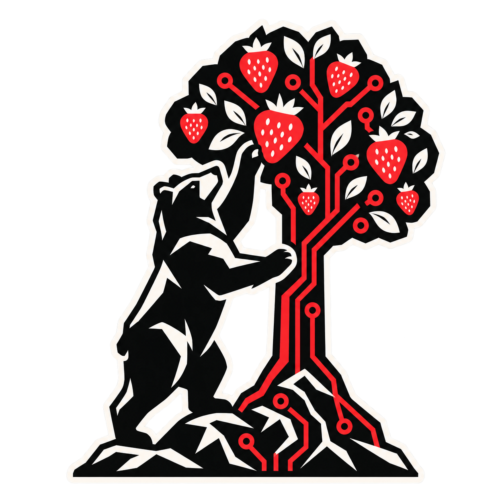

Charlas
Investigaciones, casos reales y aprendizajes contados sin filtros.
CALL FOR PAPERS ↗
BESIDESMadrid · Otoño 2026
La conferencia de seguridad hecha por y para la comunidad. Un día para romper cosas, compartir conocimiento y conocer a quienes están construyendo el futuro.
Esto es Besides
Besides Madrid nace para crear un punto de encuentro abierto, cercano y sin postureo. Aquí caben quienes llevan años rompiendo sistemas y quienes acaban de abrir su primera terminal.
Lo que encontrarás
Investigaciones, casos reales y aprendizajes contados sin filtros.
CALL FOR PAPERS ↗Sesiones prácticas para ensuciarte las manos y salir sabiendo algo nuevo.
RESERVA TU PLAZA ↗Espacios para practicar, competir y compartir con gente que habla tu idioma.
DESCUBRIR MÁS ↗Aquí empieza todo
Somos una comunidad independiente y sin ánimo de lucro. Creemos que el mejor conocimiento es el que circula, se cuestiona y se comparte.
No te lo pierdas
Déjanos tu email y sé la primera persona en enterarte de la fecha, las entradas y el call for papers.